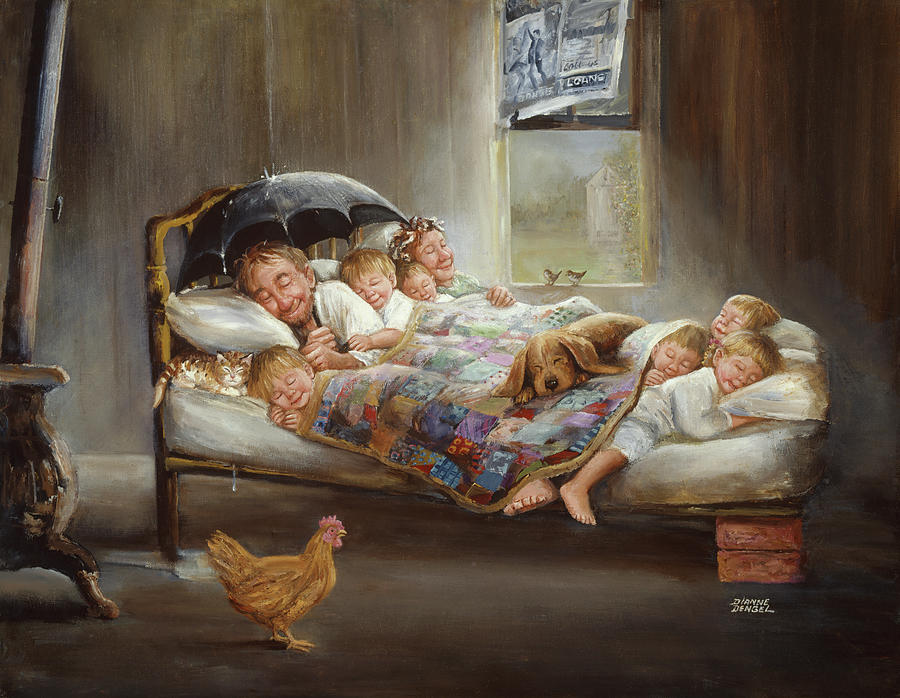

Es gibt ein Gemälde, das seit Jahren im Internet kursiert — darunter eine Geschichte, unter der Geschichte ein Gedicht, unter dem Gedicht zwei Namen.

Eine Flickendecke, Kinder, ein Hund, eine Katze, ein Regenschirm — Wasser tropft vom Dach, aber alle lächeln. In der unteren rechten Ecke eine Unterschrift: Dianne Dengel. Das Gemälde heißt „Home Sweet Home"; seine Schöpferin ist eine Amerikanerin, die in der Sendung Mr. Rogers' Neighborhood aufgetreten ist, bekannt für ihre Philosophie der „Kunst, die zum Lächeln bringt" — aus dem ländlichen Pennsylvania, von der warmen Seite der naiven Kunst.
Die eigentliche Geschichte steckt nicht im Gemälde, sondern in einer Frage — und in dem, was mit dieser Frage geschah.
1930Zwei Paschaenkel
Istanbul, Anfang der 1930er Jahre, die Redaktion der Zeitung Yarın. Der eine korrigiert Druckfahnen, der andere zeichnet Karikaturen — der eine Enkel von Mustafa Celalettin Pascha, Nazım Hikmet, der andere Enkel des Gouverneurs Abidin Pascha, Abidin Dino. Elf Jahre liegen zwischen ihnen: Nazım ist achtundzwanzig, Abidin siebzehn. Beide aus der letzten Generation der osmanischen Aristokratie, beide losgelöst von dieser Welt, beide auf der Suche nach dem, was an ihre Stelle treten könnte.
Nazım hatte in Moskau die futuristischen und konstruktivistischen Maler gesehen — Majakowskis Plakate, El Lissitzkys Buchgestaltungen, jene Welt, in der das Wort zur visuellen Kraft wurde. In Abidins Zeichnungen erkannte er eine ähnliche Energie: Die Linie war kein Schmuck, sondern ein Werkzeug des Denkens. Sie begegneten sich.
1931–1939Ein Wort, ein Strich
Als 1931 Sesini Kaybeden Şehir erschien, stammten der Einband und die Innenillustrationen von Abidin — Nazıms erstes Buch, Abidins erste Buchgestaltung. 1932 folgte Bir Ölü Evi, dann die Illustrationen zu Kuvâyı Milliye Destanı. Die Arbeitsteilung ergab sich von selbst: Nazım fand das Wort, Abidin sein visuelles Gegenstück; zwischen ihnen gab es weder Gönnerschaft noch Lehrverhältnis — zwei Männer, die in verschiedenen Sprachen redeten, aber dasselbe sagten, jeder der Übersetzer des anderen.
1938–1950Auf beiden Seiten der Mauer
1938 trat Nazım in das Gefängnis von Bursa ein und konnte es zwölf Jahre lang nicht verlassen. In dieser Zeit streifte die Türkei den Rand des Zweiten Weltkriegs und unternahm ihre ersten Schritte in Richtung Mehrparteiensystem, während Nazım in derselben Zelle saß und auf denselben Hof blickte.
Abidin gehörte zu den regelmäßigen Besuchern — er brachte Papier, Farbe, Nachrichten. Als Nazım in einen Hungerstreik trat, organisierten Abidin und Orhan Veli eine Unterschriftenkampagne, um von außen Druck aufzubauen. Als Nazım endlich freikam, blieb er eine Weile in Abidins Haus in Caddebostan — die erste Station des Mannes, der aus dem Gefängnis kam, war das Haus des Freundes, der ihn jahrelang besucht hatte.
Zwölf Jahre lang schrieb der eine drinnen, der andere zeichnete draußen; die Mauer schob sich zwischen sie, die Verbindung aber nicht.
1951–1952Geographie des Exils
1951 verließ Nazım Istanbul auf einem Motorboot — bei Nacht, über das Schwarze Meer, seine Staatsbürgerschaft und sein Rückkehrrecht hinter sich lassend, um in Moskau Zuflucht zu suchen. Ein Jahr später ging auch Abidin, aber in eine andere Richtung: Er ließ sich mit seiner Frau Güzin Dino in Paris nieder. Sie waren nicht einmal mehr im selben Land — der eine östlich des Eisernen Vorhangs, der andere westlich, und nur Briefe gingen zwischen ihnen hin und her.
Abidin übersetzte weiterhin Nazıms Gedichte ins Französische und veröffentlichte sie in Zeitschriften, illustrierte weiterhin seine Bücher. Das Exil konnte die Freundschaft nicht zerreißen, veränderte aber ihre Form: Es waren nicht mehr zwei Männer, die nebeneinandersaßen und miteinander sprachen, sondern zwei Verbannte, die der Stimme des anderen auf dem Papier folgten. Sie durchlebten dieselben Jahreszeiten in verschiedenen Städten — während Moskaus Schnee fiel, fielen die Kastanien in Paris, aber beider Fenster blickten auf ein anderes Land.
1961Die Seine, nachts
1961 kam Nazım nach Paris — um Abidin und Güzin zu besuchen, vielleicht um sie ein letztes Mal zu sehen; ob er bewusst daran dachte, können wir nicht wissen, aber die Textur des Gedichts sagt es. In einem Dachzimmer eines Hotels mit Blick auf die Seine, nachts, begann er ein langes Gedicht zu schreiben, seiner Frau Vera Tuljakowa gewidmet: Saman Sarısı — Strohgelb.
Es war das Gedicht eines Mannes, der sich der Sechzig näherte, zwei Herzinfarkte hinter sich, wissend, dass er nie in sein Land zurückkehren würde — wie eine Notiz auf der letzten Seite, geschrieben im Augenblick, da man das Buch eines Lebens zuschlägt. Zwei Jahre später würde er sterben. Mitten im Gedicht wandte er sich unmittelbar an seinen Freund von dreißig Jahren:
Ohne es dir leicht zu machen allerdings —
nicht die engelgesichtige Mutter, die ihr rosenwangiges Baby stillt,
nicht die Äpfel auf dem weißen Tuch,
nicht den roten Fisch, der zwischen Blasen im Aquarium treibt.
Könntest du das Bild des Glücks malen, Abidin? Nazım Hikmet — Saman Sarısı (Strohgelb), 1961
Man beachte die Struktur: Nazım zählt zunächst die falschen Glücksbilder einzeln auf — Postkartenmotive, Kalenderbilder, eingerahmte Süßlichkeiten — und weist sie alle unter der Bedingung „ohne es dir leicht zu machen" zurück. Dann wiederholt er dieselbe Frage. Aber die Wiederholung ist keine Bekräftigung; sie ist eine Zange: Wo die erste Frage „könntest du" fragt, fragt die zweite „nun, da du gesehen hast, was es nicht ist — was bleibt?" Was bleibt, ist die Frage selbst — unbeantwortet, offen, ehrlich.
Der Brief ohne Antwort
Abidin antwortete nicht — nicht mit einem Gemälde, nicht mit einem Gedicht, nicht einmal mit einem direkten Wort. In Interviews, wenn er dem Thema nahekam, sagte er, dass Glück Dauer voraussetze, dass er die Freude eines Augenblicks auf die Leinwand bannen könne, aber dauerhaftes Glück sich der Darstellung entziehe; der Pinsel des Malers könne die Bewegung einfangen, einen Moment, einen Querschnitt des Gefühls, aber Glück sei kein Querschnitt — es sei ein Vorgang, etwas, das weiterfließt, und sobald man das Fließende einfriert, tötet man es.
Dieses Schweigen war vielleicht die ehrlichste Antwort, die die Frage erhalten konnte. Nazım hatte keine Antwort erwartet — er hatte gefragt, weil er die Grenzen seines Freundes kannte, gefragt, um die Grenze selbst zu zeigen. Auch Abidin kannte die Grenze, und deshalb schwieg er. Zwei Meister standen vor derselben Mauer; der eine sagte „du kannst nicht hinüber", der andere nickte.
3. Juni 1963
Nazım Hikmet starb in der Nähe von Moskau, in Peredelkino, an einem Herzinfarkt; er war einundsechzig Jahre alt. Die Frage blieb in der Luft — aber Nazım hatte sie nie in Erwartung einer Antwort gestellt.
Abidin lebte nach dem Tod seines Freundes noch dreißig Jahre. In diesen dreißig Jahren illustrierte er weiterhin Nazıms Werk, machte es bekannt, nahm an Gedenkveranstaltungen teil — aber er malte nie „das Bild des Glücks".
7. Dezember 1993
Abidin Dino starb in Paris im Alter von achtzig Jahren; sein Leichnam wurde nach Istanbul überführt. Dreißig Jahre lang hatte er die Frage nicht beantwortet — ein bewusstes Schweigen, eine Bestätigung der Wahrheit, die in der Frage ausgesprochen war.
Eine geborgte Stimme
Abidin schwieg, doch andere konnten es nicht. 1987, bei einer Ausstellung in Essen, lernte ein Dichter namens Bahattin Gemici Abidin Dino kennen — und die Begegnung muss ihn genug beeindruckt haben, dass er ein Gedicht in Dinos Stimme schrieb, an Nazım gerichtet: „Mutluluğun Resmi". Das Gedicht erschien 1988 in seinem Band Yarım Bırakma Türkünü. Wir wissen nicht, wie Gemici von der Geschichte erfuhr oder ob er Dino um Erlaubnis bat — das Buch gibt keine Erklärung.
dorthin, wo wir uns zum ersten Mal begegneten,
und du würdest deinen bitteren Kaffee trinken.
Könnten wir erzählen
von jenen Tagen, von der Vergangenheit, von der Zukunft —
was für Tage vergingen,
was für Nächte …
Dann, Nazım,
würde ich das Bild des Glücks malen —
doch keine Leinwand reichte dafür;
keine Farbe … Bahattin Gemici — Yarım Bırakma Türkünü, 1988
Ein aufrichtiges Gedicht — aber nicht Abidins Gedicht. Gemici borgte sich Dinos Stimme, mit Respekt und guten Absichten, aber geborgt blieb sie. Das Internet verbreitete es, ohne den Unterschied zu kennen: Der Text begann als „Abidin Dinos Antwort an Nazım" zu kursieren; wer ihn teilte, prüfte die Quelle nicht, und wer ihn empfing, prüfte sie auch nicht, und jede Wiederholung schien die vorherige zu bestätigen.
Dann fügte jemand Dengels Gemälde hinzu, und ein perfektes Paket entstand: Nazım hatte die Frage gestellt, Abidin hatte geantwortet, Abidin hatte das Bild gemalt — alles schien an seinem Platz. In diesem Paket aus einer Frage, einem Gedicht, einem Gemälde und zwei Namen gab es nur ein einziges echtes Stück: Nazıms Frage. Die Antwort war Gemicis, das Gemälde Dengels, und Abidins Beitrag war das, was im Paket fehlte — das Schweigen.
Der Satz hinter dem Fragezeichen
„Könntest du das Bild des Glücks malen?" — das Fragezeichen am Ende dieses Satzes ist ein rhetorisches Zeichen, das Ausrufezeichen der Unmöglichkeit. Nazım erwartete keine Antwort; er stellte eine Wahrheit fest.
Nazım wusste alles, was Abidin konnte — seit Jahren hatte er ihn Buchumschläge zeichnen lassen, hatte aus der Nähe seine Linie, seine Farbe beobachtet, was er einfing und was ihm entging. Aber er sagte: mit all deiner Kraft kannst du das Glück nicht malen. Es war keine Herausforderung, sondern eine mit Liebe und Respekt getroffene Feststellung einer Grenze — er sagte seinem Malerfreund nicht „du reichst nicht aus", sondern „keiner von uns reicht aus".
In der türkischen Dichtung bildet diese Struktur eine tiefe Ader. Ein Blick auf Orhan Velis Verse genügt:
in diesen Zeilen;
könntet ihr berühren
meine Tränen, mit euren Händen? Orhan Veli Kanık
Hörtet ihr bedeutet, ihr würdet nicht hören, könntet ihr berühren bedeutet, ihr könntet nicht. Der Dichter kennt die Kraft seiner Verse, aber weiß auch, dass er euch nicht ganz dorthin tragen kann; er kann euch näherbringen, euch bis zur Schwelle führen, und dort wird er stehenbleiben. Nazım stand an derselben Schwelle: Kunst ist der Akt, sich dem zu nähern, was nicht ganz erreicht werden kann, weiterzuzeichnen, zu schreiben, zu sprechen, an dieser Grenze stehend — und zu akzeptieren, auf dieser Seite zu bleiben, während man versucht, die andere zu zeigen.
Das Offene, das geschlossen werden sollte
Das Internet nahm die Frage und machte ein Rätsel daraus — es sah in einer offenen Frage einen Mangel, der behoben werden musste. Jemand fand Dengels Gemälde — Wasser tropft vom Dach, die Familie aneinandergedrängt — sagte „das ist Glück" und teilte es als „ein Werk von Abidin Dino"; seit Jahren kursiert es unkorrigiert, denn Korrigieren ist nicht so leicht wie Teilen.
Menschen, die die Kraft der Frage nicht ertragen konnten, empfanden das Bedürfnis, sie zu schließen. Eine unbeantwortete Frage war beunruhigend — sie lösten sie wie eine Rechenaufgabe, fanden die Unbekannte, schlossen die Gleichung. Ohne es zu wissen, bewiesen sie, was Nazım gesagt hatte: es lässt sich nicht malen. Was sie gemalt zu haben glaubten, war das Gemälde eines anderen; die Antwort, die sie gegeben zu haben glaubten, war das Gedicht eines anderen. Die wahre Antwort war Abidins Schweigen, und dieses Schweigen passte in kein Paket.
Nazım stellte keine Frage; er sagte etwas. Abidin hörte es und schwieg — weil es wahr war.
Dann kamen andere: einer schrieb ein Gedicht in Dinos Stimme, ein anderer klebte das Bild einer amerikanischen Malerin daneben, alle sagten „hier ist die Antwort". Aber seit mehr als sechzig Jahren bleibt die ehrlichste Antwort Abidins Schweigen — denn manche Fragen sind keine Fragen, und manches Schweigen sagt mehr als alles, was gesagt werden könnte.